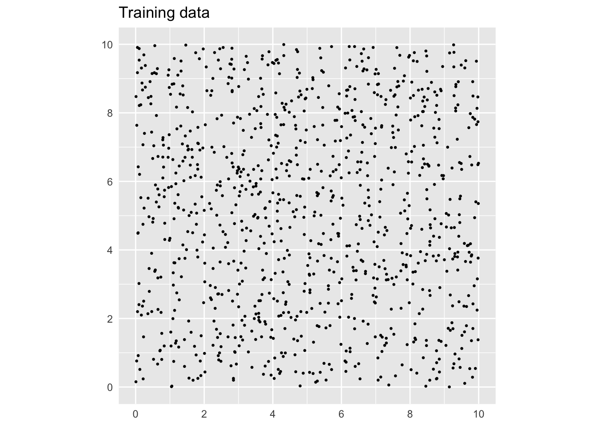
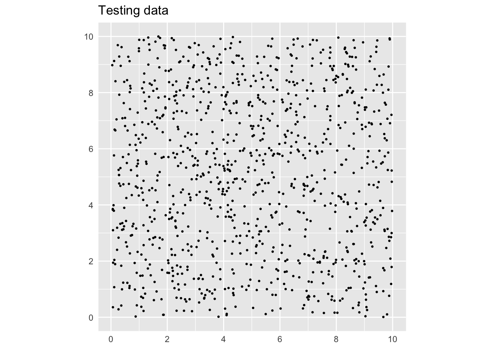
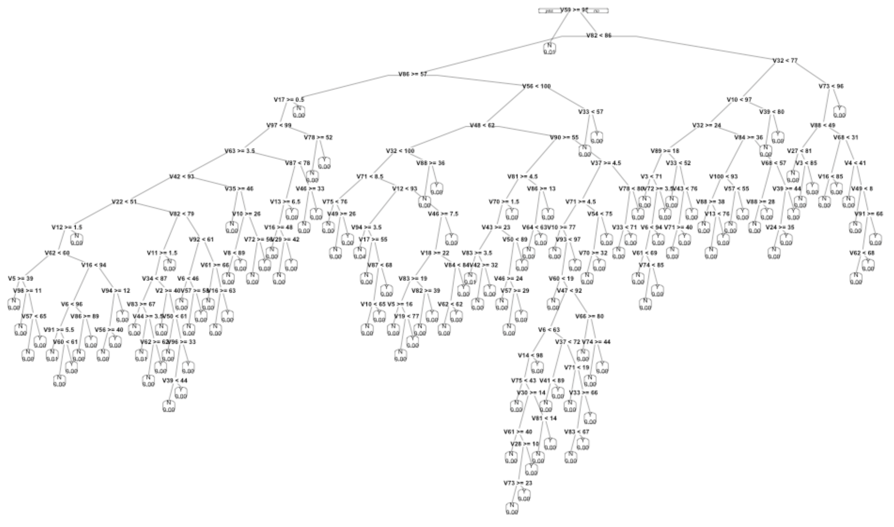

False discovery
Interpreting a p-value
If the simulation trials rarely or never produce an association as strong as that found in real-world observations, you can fairly conclude that the assumptions embedded in the simulation ought to be rejected as a proper description of the real world. On the other hand, if the simulation shows good accord with the real-world observations, you can … what? It’s not a good idea to claim the simulation is a correct description of the real world; it’s just a simulation. Instead, the proper statement is that you “fail to reject” the hypothesis hard-coded into the simulation.
A standard operating procedure
What people want to know
Another major reason why statistical hypothesis testing can be difficult to get your head around is that many people have an intuitive idea about what they want to know when testing a hypothesis: whether the stated hypothesis is likely to be true. But statistical hypothesis is expressly designed to avoid making any statement about the probability that a hypothesis might be true or false. There is good reason for this since “truth” is a shakey concept philosophically.
Consider this example of a hypothesis: “Drug X lowers blood pressure.” People being so different one from another, a hypothesis like this would not be refuted just because X raised the blood pressure of a person. A better statement might be, “Drug X typically lowers blood pressure.” Still better would be a more definite statement, “Drug X typically lowers blood pressure by around 10 mmHg.” Whether such a statement is true or not depends on the meaning of “typically” and “by around.”
Rather than looking for the truth or falsity of a hypotheses, statistical thinkers focus on a question in this form, “Is the statement that ‘Drug X typically lowers blood pressure by around 10 mmHg’ consistent with the observed facts?” Suppose, to illustrate, that the facts are the recorded change in blood pressure in 10 patients given drug X.
Consider these measurements of change in blood pressure before and after administration of the drug: -5, -1, +7, -15, -3, -6, +1, -8, +2, 0
We’re seeing a reduction (a negative number) in most of the patients. The numbers are near -10, even if they are not exactly -10 all the time. When there’s an increase in blood pressure, it’s small.
In contrast, suppose the numbers were 5, 1, -7, 15, 3, 6, -1, 8, -2, 0. These number are inconsistent with the claim that the typical change is -10. Most of them are positive, sometimes by a lot. Of the negative numbers, none of them even reaches -10.
It would be better to have a quantitative way to measure “consistency with the observed facts.” Two changes to the way we frame hypotheses will help.
- Be more specific about “typical” and “by around.” For instance, here’s a very definite hypothesis: “In a group of patients with such-and-such condition, drug X lowers blood pressure by an average of -10 mmHg with a standard deviation of 7mmHg.”
There is, I think, a helpful analogy to be made between hypothesis testing and the familiar ways that we try to avoid information overload on the Internet.
“Internet protocols” organize communication into standard format “packets” that are easily and rapidly transmitted, routed, and received. These packets make possible the vast web of connections that is the Internet. Anyone can put any digital content they like inside a packets; the protocols are neutral in this regard. The Internet protocols were not designed to determine what content is worth transmitting and what is worth receiving. We rely on other systems for that, mostly at the receiving end. There are spam filters to avoid email accounts being flooded with worthless or harmful messages. There are recommender systems that compare your history of music or movie streaming to that of others in order to identify what new content you might like. Search engines look inside web pages to identify connections and rank highly those pages that are linked to by other highly ranked pages. These systems leave creators free to follow their interests, ideas, and imaginations, while providing a little guidance to people who want to access some content but avoid being overcrowded by other content that is not worthwhile.
Historically, there were earlier waves of technology that increased the ability to communicate. Printing and postal systems emerged in the 13th and following systems. Before those innovations, communication was outrageously expensive, requiring hand-copying of manuscripts, couriers, and camel trains. Content was controlled to some extent by authorities: government censorship; church “indices” and spritual authorities; and often the authorities of those famous classical philosophers and poets whose work and thought was promulgated by early universities.
About four centuries ago, such authorities were being challenged. It slowly became accepted to make judgements based on observations and to disregard antique authorities. Enlightened “scientists” communicated their discoveries in hand-written letters to one another.1 In the late 1600s, another, possibly more efficient means of communication was developed: scientific societies where members met and read aloud their work to an audience, and the journals of such societies which enabled mass communication to those scientists distant from the society’s meetings in time or space.
Early scientific journals are delightful collations on diverse and miscellaneous subjects. Everything seems to have been of interest to everyone. Publication was regulated by the recommendations of “members” of the society; new members were admitted by the consensus of earlier members.
Over the centuries, the growth of scientific content and the specialization of methodology called for research findings to be sorted by area. But there was still need to regulate publication, to avoid distracting readers with worthless information.
Hand-in-hand with the scientific revolution’s reliance on observation and data rather than authority came the need to standardize methods for summarizing data. This might be called a “statistical protocol” by analogy to Internet protocols, but there is no wise governing body, only consensus and “accepted practice.”
The data from a bench-top experiment might consist of, say, six numbers: three from the treatment and three from controls. The arithmetic means of these two groups is practically certain to be non-zero, even if the the treatment had no effect. This meant that a means was needed to establish when the difference in means was large enough to suggest the two groups might be genuinely different and that the treatment did have an effect. The statistical protocol to decide such things needed to be simple: computers weren’t available and there were no courses to teach statistical method until the 1960s. In the 1930s, prominent statistical pioneer Ronald Fisher published a slim volume, Statistical Methods for Research Workers which laid out methods for managing and standardizing the calculations. Fisher’s authority was substantial but not absolute. Differing philosophical views also came to influence “accepted practice.”
Early statistics books and courses codified “accepted practice.” What emerged is the system of calculations that we call “hypothesis testing” and the ubiquitous p-value. Still, this was rooted in the need to avoid journals wasting library-shelf-space and reader time with experiments that produced arithmetic differences between groups that were accidental and not genuinely “significant.’
The now-codified accepted practice was in many ways similar to the protocols used by search engines and social media to direct our eyes and ears to content that might, possibly, be worthwhile. These systems are far from perfect, sometimes hiding good content or promoting worthless content. And, of course, the worth of content is a matter of personal interests and values, something that computer algorithms can mimic only imperfectly.
“Hypothesis testing” is an ad hoc set of not always consistent concepts cobbled together by a unorganized community of independent researchers, steered perhaps by the perceived authority of one statistical celebrity or another. It is not a mathematically derived, highly optimized calculation of objective worth, just a simple means to deal with the fact that arithmetic differences are influenced by sampling variation and noise, and that a detected difference might not reliably point to a genuine difference between groups.
It is simply not possible to understand hypothesis testing in the same way you can understand differentiation or data wrangling.
Hypothesis testing emerged in an era of bench-top and agricultural experiments conducted by a small community of self-identified scientists working without central control. It might have been a practicable solution to the problem of information overload in that era of small data. But the protocol has been frozen in place by textbooks; each generation passing it along to the next as received wisdom, in much the same way as the views of classical philosophers and poets were passed down to later generations as authoritative and unchallengeable.
So lets step back from this frozen statistical protocol of hypothesis testing and point out inconsistencies and peculiarities that make it hard to make sense of and perhaps unsuited to the needs of handling information overload in todays world of big data and huge scientific enterprise.
NULL versus Alternative hypothesis
Use a threshold
Don’t print the p-value
p-value is an inseparable tangle of the amount of data available and the effect size. With enough data, practically everything has a small p-value.
Hundreds of thousands (perhaps millions) of scientists churning out research results. A filter that eliminates 95% of the nonsense still lets through an unfathomable mass of content.
So many choices in research and analysis methods—which covariates to include, whether to exclude an inconvenient point as an outlier, multiple choices for the response variable, all combined with a professional priority to “publish or perish.”
Note
A short introduction to power and the alternative hypothesis.
Use DAGs and ask for the p-value for different sample sizes.
Ask, and it shall be given you; seek, and ye shall find; knock, and it shall be opened unto you: For every one that asketh receiveth; and he that seeketh findeth; and to him that knocketh it shall be opened. – Matthew 7:7-8
The modeling techniques we’ve covered are surprisingly powerful at identifying patterns in data. With power comes responsibility. This chapter is about how spurious patterns can arise in data and processes you can use to help ensure that the patterns your models identify are genuine.
It’s well known that people are particularly adept at finding patterns. To see this, spend a minute or two with Figure 1, which shows x-y pairs generated by a complex mathematical procedure called the Mersenne-Twister algorithm. How many of the structures created by Mersenne-Twister algorithm can you identify by eye? Take five of the stronger-looking patterns: clusters of points, large empty areas, strings of dots, etc. Write down a list of the patterns you spotted, including the coordinate location of each, a short description (e.g. “arc of dots”), and your subjective sense of how strong or convincing that pattern is.
With your list in hand, look at Figure 2 at the end of this section, which displays another n = 1000 x-y pairs generated by the same mathematical procedure. You’re going to check which of the patterns you found in the testing data are confirmed by the training data. Go through your list, looking at each location where you found a pattern in the training data and checking whether a similar pattern appears at that location in the testing data.
Were any of the patterns you saw in the training data confirmed by the testing data?
There’s no denying that the patterns you saw were in the data. But the Mersenne-Twister algorithm is specifically designed not to produce regular patterns. Any that you saw were accidental alignments in the particular sample of data from the algorithm.
The “patterns” abstractly referred to in the previous paragraphs appear in data. In data used for modeling, a pattern might be a relationship or correlation between two or more variables, or a cluster of rows in a data frame that have similar values for a response variable and explanatory variables.
Training models on data can encode the underlying patterns. For instance, a pattern in the data might result in a model generating detailed predictions or demonstrating a strong effect size of one variable on another.
A valid pattern is one that steadily appears from one sample of data to another (so long as the sample is big enough). Such consistency suggests that the pattern reflects some genuine aspect of the system generating the data. A false or accidental pattern is one that appears in a sample of data, but is unlikely to show up in another sample. This inconsistency indicates that conclusions based on this pattern are unlikely to be applicable in the future or in new situations.
The obvious, direct way to check the validity of a pattern encoded by a model is to see if the same pattern occurs in new data, data that was not used in building the initial model. Lesson 22 took this approach by constructing a sampling distribution of a statistic such as an effect size. To create a sampling distribution, we train many models on different subsets of a data set.
When working with prediction models, the sign of a valid pattern is that the quality of the predictions – perhaps measured with a root-mean-square-error or a sensitivity/specificity – remains consistent when we calculate it on new data. A prediction that shows very small error on the data used to train the model but large error on new data is not a prediction that we can rely on in new settings.
The historical rapid growth in data analysis activity and the construction of data sets with large numbers of explanatory variables has made it easier to capture with models both valid patterns and false patterns. This makes it important to recognize that the false detection of patterns is possible whenever you train a model, to be aware of the characteristics of models and data that make false detection more likely, and to adopt procedures to mitigate the risk that the results of your work may not generalize beyond the particular sample of data you have in hand.

Example: Falsely discovering purchasing habits
You are a data scientist for an internet retailer, Potomac.com, which has just bought a national grocery chain, Austin Foods. You’re part of the team that is connecting the customer loyalty card data from Austin Foods with Potomac’s own large record of purchases. This is accomplished by offering a 10% Xdiscount for an item on Potomac to people who enter their Austin loyalty card number.
Potomac’s management wants to create a cross-marketing program in which a customer shopping at Potomac will be offered coupons for Austin products. The hope is that the coupon discount will attract new customers to start shopping at Austin’s. In order for this to work, it’s best if the coupons are for products that the customer finds attractive.
Your job is to build the coupon assignment system, that is, to figure out how to choose which products a customer is most likely to find attractive. To do this, you’ll create a set of classifiers that indicates the interest of a Potomac customer in an Austin product.
You’ve got data on 10,000 Potomac/Austin customers, that is, people whose records from Potomac and from Austin you can bring together. There are ten popular Austin products for which coupons can be offered. Among the 10,000 customers, about 16% have actually bought any given Austin product. You have built ten classifiers, one for each of the ten products. The input to the classifiers is 100 standard measures of a customer’s Potomac activity. The output of each classifier is the probability that the customer actually bought the corresponding Austin product.
The no-input classifier gives a probability of about 16% that the customer will buy the product. Management hopes that you will be able to segment the market to identify the products that a given person is much more likely to buy.
It’s a lot to ask of a person to sort through 100 potential explanatory variables to identify those that are predictive of buying a product. But it’s straightforward to use a model family that can learn on its own which variables are informative. You train the ten classifiers using a tree family of models.
Heads up! The “data” has been created using random numbers, so that there are no actual relationships between the explanatory variables and the purchase outcomes. That is, no actual relationships aside from the accidental ones, such as the patterns encountered in Figure 1.
To illustrate how the coupon assignment system works, Table @ref(tab:some-results) shows an intermediate step in the calculation, where a probability for each of the ten products is calculated for each customer.
Table @ref(tab:some-results) shows the output of the classifiers for just the first fifteen customers out of the 10,000 used to build the coupon selection system. For each person, all ten classifiers have been applied to estimate the probability that the person would buy each of the ten products. Highlighted in green are those products with a purchase probability greater than 40%.
The final output of the coupon assignment system is, for each customer, the identification of the specific products for which the probability is large. Reading Table @ref(tab:some-results), you’ll see that for person 1, product 9 merits a coupon. For person 2, products 2 and 10 merit a coupon. A winning product has not been identified for every customer, but you can’t please everyone.
Attaching package: 'formattable'The following objects are masked from 'package:scales':
comma, percent, scientific| product | 1 | 2 | 3 | 4 | 5 | 6 | 7 | 8 | 9 | 10 | 11 | 12 | 13 | 14 | 15 |
|---|---|---|---|---|---|---|---|---|---|---|---|---|---|---|---|
| 1 | 11 | 71 | 7 | 9 | 63 | 14 | 9 | 8 | 0 | 13 | 7 | 11 | 9 | 4 | 11 |
| 2 | 6 | 14 | 20 | 6 | 14 | 14 | 14 | 20 | 14 | 14 | 14 | 14 | 14 | 14 | 14 |
| 3 | 15 | 11 | 11 | 6 | 15 | 15 | 12 | 11 | 11 | 15 | 10 | 9 | 8 | 8 | 5 |
| 4 | 6 | 14 | 11 | 8 | 9 | 11 | 6 | 9 | 13 | 13 | 13 | 13 | 6 | 10 | 11 |
| 5 | 11 | 11 | 11 | 11 | 11 | 0 | 13 | 92 | 7 | 11 | 13 | 13 | 43 | 8 | 9 |
| 6 | 13 | 13 | 13 | 7 | 9 | 13 | 10 | 12 | 10 | 13 | 13 | 13 | 10 | 7 | 13 |
| 7 | 15 | 12 | 6 | 9 | 9 | 15 | 11 | 75 | 9 | 11 | 9 | 11 | 4 | 9 | 16 |
| 8 | 30 | 10 | 10 | 8 | 6 | 10 | 12 | 7 | 6 | 78 | 86 | 6 | 6 | 13 | 8 |
| 9 | 67 | 14 | 8 | 9 | 10 | 10 | 10 | 75 | 11 | 9 | 0 | 11 | 15 | 2 | 9 |
| 10 | 19 | 46 | 6 | 9 | 10 | 7 | 42 | 9 | 10 | 6 | 16 | 6 | 9 | 16 | 14 |
(ref:some-results-cap) The output of the ten classifiers for the first 15 customers. Green highlighting is used for those products which a given customer is likely to buy.
To test the performance of the system, we can look at the product/customer combinations for which a coupon was merited, and check how many of them actually corresponded to a purchase: it’s 74%. But for the combinations with no coupon, the purchase rate was only 11%.
The results are impressive. For about half of the customers, the coupon assignment system has identified customers/product combinations with a purchase probability of more than 40%. Often, the probability of purchase is considerably higher than 40%. Targeting each customer with a coupon for the right product is likely to generate a lot of new sales!
Since data was generated using random numbers, we know that the “success” of the coupon assignment system is illusory. Later, we’ll see how the process was able to uncover so many accidental patterns from random data and list some things to look out for when modeling. But first, let’s provide a reliable method for you to identify when your results are based in accidental patterns: using testing data.
A true measure of the performance of a model should be based not on the data on which the model was trained, but data which have been held back for use in testing and not used in training. For this example, we’ll use testing data consisting of 10,000 customers for whom we have the same 100 explanatory variables from the Potomac database and for whom we know if each customer purchased any of the ten products from Austin Foods. Only about 1 in 6 customers bought any single product from Austin. We want to see if the classifier assigns a high probability to those customers who did buy the product. If so, it means we can use just the 100 explanatory variables to find winning products for customers for whom we have no Austin purchasing data.
Warning: The `x` argument of `as_tibble.matrix()` must have unique column names if
`.name_repair` is omitted as of tibble 2.0.0.
ℹ Using compatibility `.name_repair`.| product | 1 | 2 | 3 | 4 | 5 | 6 | 7 | 8 | 9 | 10 | 11 | 12 | 13 | 14 | 15 |
|---|---|---|---|---|---|---|---|---|---|---|---|---|---|---|---|
| 1 | 17 | 8 | 75 | 16 | 62 | 15 | 2 | 11 | 8 | 24 | 7 | 15 | 7 | 13 | 10 |
| 2 | 14 | 20 | 14 | 14 | 14 | 14 | 14 | 6 | 14 | 13 | 6 | 14 | 14 | 13 | 14 |
| 3 | 14 | 22 | 6 | 8 | 14 | 10 | 14 | 13 | 63 | 11 | 9 | 11 | 17 | 13 | 15 |
| 4 | 13 | 13 | 13 | 13 | 13 | 13 | 6 | 9 | 0 | 13 | 13 | 13 | 12 | 0 | 62 |
| 5 | 9 | 13 | 9 | 85 | 11 | 11 | 59 | 9 | 12 | 7 | 11 | 11 | 11 | 13 | 13 |
| 6 | 13 | 13 | 13 | 14 | 7 | 7 | 12 | 9 | 13 | 11 | 80 | 13 | 7 | 7 | 13 |
| 7 | 15 | 11 | 12 | 6 | 9 | 0 | 9 | 15 | 5 | 7 | 33 | 12 | 9 | 12 | 15 |
| 8 | 7 | 13 | 6 | 7 | 10 | 6 | 13 | 14 | 10 | 100 | 9 | 8 | 10 | 13 | 6 |
| 9 | 9 | 12 | 75 | 58 | 8 | 11 | 11 | 9 | 10 | 8 | 60 | 11 | 10 | 10 | 12 |
| 10 | 2 | 10 | 20 | 2 | 16 | 12 | 7 | 75 | 15 | 16 | 83 | 15 | 16 | 56 | 14 |
(ref:purchase-test-cap) Similar to Table @ref(tab:some-results) but for the testing data.
A valid evaluation of the performance of the system involves using the testing data rather than the training data. Figure @ref(fig:purchase-test) shows the assignment of coupons for the customers in the test data. Although coupons are assigned to these customers, the purchase rate for these items is only 16%, no different than the probability of purchase for no-coupon items. In other words, the coupon assignment system doesn’t work at all!
Sources of false discovery
How did the coupon classifier system identify so many accidental patterns, patterns that existed in the training data but not in the testing data?
One source of false discovery stems from having multiple potential response variables. In the Potomac/Austin example, there were ten different classifiers at work, one for each of the ten Austin products. Even if the probability of finding an accidental pattern in one classifier is small, looking in ten different places dramatically increases the odds of finding something.
Similarly, having a large number of explanatory variables – we had 100 in the coupon classifier – provides many opportunities for false discovery. The probability of an accidental pattern between one outcome and one explanatory variable is small, but with many explanatory variables each being considered it’s much more likely to find something.
A third source of false discovery at work in the coupon classifier relates to the family of models selected to implement the classifier. We used a tree model classifier capable of searching through the (many) explanatory variables to find ones that are associated with the response outcome. Unbridled, the tree model is capable of very fine stratification. Each coupon classifiers stratified the customers into about 200 levels. On average, then, there were about 50 customers in each strata. But there is variation, so many of the strata are much smaller, with ten or fewer customers. The small groups were constructed by the tree-building algorithm to have similar outcomes among the members, so it’s not surprising to see a very strong pattern in each group. For each classifier, about 15% of all customers fall into a strata with 20 or fewer customers.
To illustrate, Figure 3 shows the shape of the tree model for a typical coupon classifier. Each of the splits reflects an accidental alignment of the response variable with one of the explanatory variables. As more splits are made, the group of customers contained in the split becomes smaller. Many of the leaves on the tree contain just a handful of customers who accidentally had similar values for the several explanatory variables used in the splits.

The tree is too complex to be plausible as a real-world mechanism. None of the details in Figure 3 have any validity beyond the training data itself.
Identifying false discovery
We use data to build statistical models and systems such as the coupon-assignment machine. False discovery occurs when a pattern or model performance seen with one set of data does not generalize to other potential data sets.
The basic technique to avoid false discovery is called cross validation. One simple approach to cross validation splits the data frame into two randomly selected non-overlapping sets of rows: one for training and the other for testing. Use the training data to build the system. Use the testing data to evaluate the system’s performance.
Most often, cross validation is used to test model prediction performance such as the root-mean-square error or the sensitivity and specificity of a classifier. This can be accomplished by taking the trained model and providing as input the explanatory variables from the testing data, then comparing the model output to the actual response variable values in the testing data. Note that using testing data in this way does not involve retraining the model on the testing data.
How big should the training set be compared to the testing set? For now, we’ll keep things simple and encourage use of a 50:50 split or something very close to that.
This is a simple and reliable approach that should always be used.
False discovery and multiple testing
When the main interest is in an effect size, standard procedure calls for calculating a confidence interval on the effect. For example, a 2008 study examined the possible relationship between a woman’s diet before conception and the sex of the conceived child. The popular press was particularly taken by this result from the study:
Women producing male infants consumed more breakfast cereal than those with female infants. The odds ratio for a male infant was 1.87 (95% CI 1.31, 2.65) for women who consumed at least one bowl of breakfast cereal daily compared with those who ate less than or equal to one bowlful per week. [@fetal-sex-2008]
The model here is a classifier of the sex of the baby based on the amount of breakfast cereal eaten. The effect size tells the change in the odds of a male when the explanatory variable changes from one bowlful of cereal per week to one bowl per day (or more). This effect size is sensibly reported as a ratio of the two odds. A ratio bigger than one means that boys are more likely outcomes for the one-bowl-a-day potential mother than the one-bowl-a-week potential mother. The 95% confidence interval is given as 1.31 to 2.65. This confidence interval does not contain 1. In a conventional interpretation, this provides compelling evidence that the relationship between cereal consumption and sex is not a false pattern.
But the confidence interval is not the complete story. The authors are clear in stating their methodology: “Data of the 133 food items from our food frequency questionnaire were analysed, and we also performed additional analyses using broader food groups.” In other words, the authors had available more than 133 potential explanatory variables. For each of these explanatory variables, the study’s authors constructed a confidence interval on the odds ratio. Most of the confidence intervals included 1, providing no compelling evidence of a relationship between that food item and the sex of the conceived child. As it happens, breakfast cereal produced the confidence interval that was the most distant from an odds ratio of 1.
Let’s look at the range of confidence intervals that can be found from studying 100 potential random variables that are each unrelated to the response variable. We’ll simulate a response randomly generated “sex” G and B where the odds of G is 1. Similarly, each explanatory variable will be a randomly generated “consumption” high or low where the odds of high is 1. A simple stratification of sex by consumption will generate the odds of G for those cases with consumption Y and also the odds of G for those cases with consumption N. Taking the ratio of these odds gives, naturally enough, the odds ratio. We can also calculate from the stratified data a 95% confidence interval on the odds ratio.
So that the results will be somewhat comparable to the results in @fetal-sex-2008, we’ll use a similar sample size, that is, n = 740. Table @ref(tab:sex-consumption-1) shows one trial of the simulation.
| high | low | |
|---|---|---|
| B | 165 | 182 |
| G | 211 | 182 |
(ref:sex-consumption-1-cap) A stratification of sex outcome (B or G) on consumption (high or low) for one trial of the simulation described in the text.
Referring to Table @ref(tab:sex-consumption-1), you can see that the odds of G when consumption is low is 182 / 182 = 1. The odds of G when consumption is high is 211/165 = 1.28. The 95% confidence interval on the odds ratio can be calculated. It is 0.95 to 1.73. Since that includes 1, the data underlying Table @ref(tab:sex-consumption-1) provide little or no evidence for a relationship between sex and consumption. This is exactly what we expect, since the simulation involves entirely random data.
Figure 4 shows the 95% confidence interval on the odds ratio for 133 trials like that in Table @ref(tab:sex-consumption-1). The confidence interval from each trial is shown as a horizontal line. The large majority of them include 1. That’s to be expected because the data have been generated so that sex and consumption have no relationship except those arising by chance.
Warning: geom_vline(): Ignoring `mapping` because `xintercept` was provided.
Nonetheless, out of 133 simulations there are six where the confidence interval does not include 1. These are shown in red. By necessity, one of the intervals will be the most extreme. If instead of numbering the simulations, we had labelled them with food items – e.g. grapefruit, breakfast cereal, toast – we would have a situation very similar to what seems to have happened in the sex-vs-food study. (For a more detailed analysis of the impact of multiple testing in @fetal-sex-2008, see @young-2009.)
Suppose now that half of the data used in @fetal-sex-2008 had been held back as testing data. Using the training data, it would be an entirely legitimate practice to generate hypotheses about which specific food items might be related to the sex of the baby. The validity of any one selected hypothesis could then be established using the testing data without the ambiguity introduced by multiple testing. The testing data confidence interval can be taken at face value; the training data confidence interval cannot.
Example: Organic discovery?
It’s easy to find organic foods in many large grocery stores. Advocates of an organic diet are attracted by a view that it is sustainable, promotes small farms, and helps avoid contact with pesticides. There are also nay-sayers who make valid points, but that is not our purpose here. Informally, I find that many people and news reports point to the health benefits of an organic diet. Usually they believe that these benefits are an established fact.
A 2018 New York Times article observed:
People who buy organic food are usually convinced it’s better for their health, and they’re willing to pay dearly for it. But until now, evidence of the benefits of eating organic has been lacking. [@NYT-2018-10-23-Rabin]
The new evidence of health benefits is reported in an article in the Journal of the American Medical Association: Internal Medicine [@baudry-2018]
Describing the findings of the research, the Times article continued:
Even after these adjustments [for covariates], the most frequent consumers of organic food had 76 percent fewer lymphomas, with 86 percent fewer non-Hodgkin’s lymphomas, and a 34 percent reduction in breast cancers that develop after menopause.
The study warrants being taken seriously: it involved about 70,000 French adults among whom 1340 cancers were noted. The summary of organic foot consumption was a scale from 0 to 32 and included 16 labeled products including dairy, meat and fish, eggs, coffee and tea, wine, vegetable oils, and sweets such as chocolate. Adjustment was made for a substantial number of covariates: age, sex, educational level, marital status, income, physical activity, smoking, alcohol intake, family history of cancer, body mass index, hormonal treatment for menopause, and others.
Yet … the reseach displays many of the features that can lead to false discovery. For instance, results were reported for four different types of cancer: breast, prostate, skin, lymphomas. The study reports p-values and hazard ratios2 comparing cancer rates among the four quartiles of the organic consumption index.
Comparing the most organic (average organic index 19.36/32) and the least organic (average index 0.72/32) groups the 95% confidence interval on the relative risk and p-values given in the study’s Table 4 are:
- Breast cancer: 0.66 - 1.16 (p = 0.38)
- Prostate cancer: 0.61- 1.73 (p = 0.39)
- Skin cancer: 0.49 - 1.28 (p = 0.11)
- Lymphomas: 0.07 - 0.69 (p = 0.05)
You might be surprised to see that the confidence interval on the relative risk for breast cancer includes 1.0, which suggests no evidence for an effect. As clearly stated in the report, the risk reduction for breast cancer is seen only in a subgroup of study participants: those who are postmenopausal. And even then, the confidence intervals continue to include 1.0:
- Breast cancer pre-menopausal: 0.67 - 1.52 (p = 0.85)
- Breast cancer post-menopausal: 0.53 - 1.18 (p = 0.18)
So where is the claimed 34% reduction in breast cancer cited in the New York Times article. It turns out the the study used two different indices of organic food consumption. The 0 to 32 scale which includes many items for which the amount consumed is very small (e.g., coffee, chocolate) and a “simplified, plant derived organic food score.” It’s only when you look at the full 0 to 32 scale that you see the reduction in post-menopausal breast cancer: the confidence interval is 0.45 to 0.96 (p = 0.03).
What about cancer rates overall? For the 0 to 32 scale the risk ratio was 0.58 - 1.01 (p = 0.10). To see the claimed reduction clearly you need to look at the simplified food score which gives 0.63 - 0.89 (p < 0.005). And it’s only in comparing the highest-index quarter of participants with the lowerest quarter participants that any difference at all is seen in any type of cancer: the middle-half of participants show no difference in relative risk from the lowest-organic quarter of participants. (Because of this, had the study compared the highest quarter to the next highest quarter, they would have seen basically the same relative risks reported in the highest-to-lowest quarter comparison. Then the conclusion would have had a different flavor, perhaps to be reported as “Typical organic food consumption levels show no cancer benefits.”)
A further source of potential false discovery stems from the study’s starting and stop times. It’s not clear that these were pre-defined; the reported results are intermediate to a longer follow up. The choice to report intermediate results is another way that the number of opportunities for false discovery is increased. And the choice is important: for the follow-up time used, about 2% of the participants developed cancer. In an earlier study of more than 600,000 middle-aged UK women (average age 59), the incidence of cancer was four times larger: 8.6%. [@bradbury-2014] That study did not find any relationship between organic food consumption and overall cancer rates, and found no relationship for 15 out of 16 different types of cancer. The exception is extremely interesting: non-Hodgkin lymphoma for which a similar result was found in the French study.
So is the study reported in the New York Times a matter of false discovery? It’s emotionally unsatisfying to discount a result about organic food and non-Hodgkin lymphoma simply because it’s part of a larger study that looked at many different combinations of cancer types and organic food indices. What if the researchers had only studied non-Hodgkin lymphoma – they would have gotten the same result and it wouldn’t have the deficiencies of being the strongest result of many possibilities. It would have stood on its own. But it doesn’t and we are left in a state of doubt.
p-values and “significance”
False discovery is not a new problem. The traditional logic can be traced back to 1710, when John Arbuthnot was examining London birth records from 1629 to 1710. Arbuthnot was surprised to find that for each year males were more common than females. In interpreting this finding, Arbuthnot refered to the conventional wisdom that births of males and females are equally likely. If this were the case, in any one year there might, by chance, be more females than males or the other way around. While it’s theoretically possible that chance might produce the string of 82 years with more males, it’s very unlikely. “From whence it follows, that it is Art, not Chance, that governs,” Arburthnot wrote. In more modern language, Arburthnot concluded that the hypothesis of equal rates of male and female births was not consistent with the data. Arbuthnot’s “Chance” corresponds to false discovery, while “Art” is a valid discovery.
Arburthnot’s logic became a standard component of statistical method.
- Summarize the data into a single number called a “test statistic”. For Arburthnot the test statistic was the number of years where male births predominated, out of the 82 years being examined. The observed value of the test statistic was 82.
- State a “null hypothesis”, typically something that is the conventional wisdom. For Arburthnot, the null hypothesis was that male and female births are equally likely.
- Calculate a hypothetical quantity based on the null hypothesis: the probability that the test statistic produced in a world in which the null hypothesis holds true would be at least as large as the test statistic.
- If the probability in (3) is small, one is entitled to “reject the null hypothesis.” Typically, “small” is defined as 0.05 or less.
In the 1890s, statistical pioneer Karl Pearson invented a test statistic he called \(\chi^2\) (“chi”-squared, with “chi” pronounced “ki” as in “kite”) that can be applied in a variety of settings. In 1900, Pearson published a table [@pearson-1900] that makes it an easy matter to look up the probability in step (3) above. He called this theoretical probability “P”, a name that has stuck but is conventionally written as lower-case “p”.
Data scientists tend to work with “big data”, but for many applications of statistics, data is so scarce that use of separate training and testing data is impractical. For such small data, the calculation of a p-value can be a sensible guard against false discovery. Still, a p-value does not address any of the sources of false discovery outlined in the previous sections of this chapter. When used with small data and simple modeling methods, those sources of false discovery are not so much of a problem. In small data there won’t be multiple explanatory variables that can be searched and there won’t be a choice of response variables. This doesn’t eliminate all problems, since in small data results can depend critically on the inclusion or exclusion of a single row of data. The name “p hacking” has been given to the various ways that researchers can manipulate p-values to get them below 0.05.
Another problem with p-values stems from misinterpretation of the admittedly difficult logic that underlies them. The misinterpretations are encouraged by the use of the term “tests of significance” to the p-value method. Particularly galling is the use of the description “statistically significant” to describe a result where p < 0.05. The everyday meaning of “significant” as something of importance is in no way justified by p < 0.05. Instead, the practical importance or not is more clearly signaled by examining an effect size. (It’s extremely disappointing that journalists, who are writing for an audience that for the most part has no understanding of p-value methodology, use “significant” when reporting on the statistics of research findings. It would be more honest to use a neutral term such as “null-validated” or “p-validated” which does not confuse the statistical result with actual practical importance.)
The p-value methodology has little or nothing to contribute to data science practice. When data is big there is a much more straightforward method to guard against false discovery: cross validation. And when data is big there is another, more fundamental problem with p-values. They are calculated with reference to a specific null hypothesis of “no effect” or “no relationship.” More realistically, they should be calculated with respect to a hypothesis of “trivial (but potentially non-zero) effect”. There are all sorts of mechanisms in the world (such as common causes) that can create the appearance of some effect or relationship. No matter how trivial in size this is, with sufficient data the p-value will become small. To illustrate, Figure 5 shows the p-value as a function of the sample size n in a system with an R-squared of 0.001, which in most settings would be of no practical signficance.
Warning: geom_hline(): Ignoring `mapping` because `yintercept` was provided.
NOTES IN DRAFT
“Statistical crisis” in science
https://www.americanscientist.org/article/the-statistical-crisis-in-science
Garden of the Forking Paths
Ionedes
Footnotes
The word “science” comes from the Latin for “to know.” But a dictionary definition of “science” makes clear the “scientific” style for gaining knowledge: “The systematic study of the structure and behavior of the physical and natural world through observation, experimentation, and the testing of theories against the evidence obtained.” (Source: Oxford Languages)↩︎
Hazard ratios are analogous to risk ratios.↩︎